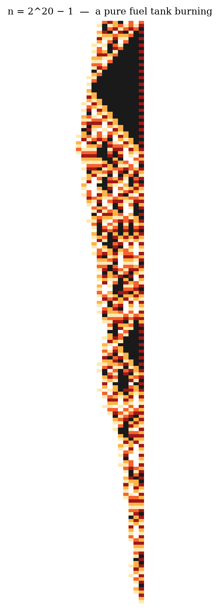
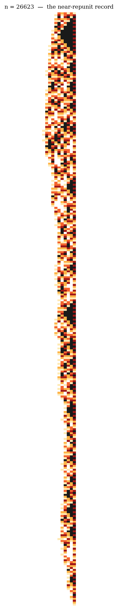

27: a long fever of small flare-ups

220−1: a fuel tank burning

26623: a record holder
How the most famous unsolved problem in arithmetic turns out to be a tiny two-rule cellular automaton — explained from scratch.
Pick any whole number. If it is even, halve it. If it is odd, triple it and add one. Repeat. For example, starting from 7:
7 → 22 → 11 → 34 → 17 → 52 → 26 → 13 → 40
→ 20 → 10 → 5 → 16 → 8 → 4 → 2 → 1
Every number anyone has ever tried — and computers have tried every number up to about 295 quintillion — ends at 1. The Collatz conjecture says every number does. Nobody has been able to prove it. It has resisted the best mathematicians for 90 years.
We normally write numbers in base ten: digits 0–9, each position worth ten times the one to its right. But nothing forces ten on us. In base six we use only the digits 0–5, and each position is worth six times the one to its right. Think of writing numbers with a single die: thirteen becomes 21 in base six (2 sixes + 1). Seven becomes 11 (1 six + 1).
We give each digit a colour, from white (0) to black (5):
| 0 | 1 | 2 | 3 | 4 | 5 |
Why base six? Because 6 = 2 × 3 — and the Collatz game is made entirely of twos (halving) and threes (tripling). Base six is the only writing system in which both operations become simple, as we are about to see.
A cellular automaton is a row of cells, each holding a symbol, evolving in time steps. At every tick, each cell computes its new symbol by looking only at itself and its immediate neighbours — no cell ever sees the whole row. Stephen Wolfram made these famous by showing that even the simplest such rules (like his “rule 110”) can produce endlessly complex, seemingly random behaviour from one tiny local law.
The key fact: the Collatz game, written in base six, is exactly such a machine. Two local rules, each cell looking one neighbour away. Nothing else. (This locality has been noticed by researchers before — a quasi-automaton by Cloney, Goles & Vichniac in 1987, and the base-six version explicitly by Jarkko Kari in 2012 — but it remains far less famous than it deserves, and the story told below, of fuel, fair coins and gates, is what our research programme adds.)
Which rule fires is decided by one glance at the last cell: odd digit → triple, then the +1 fix, then halve; even digit → halve. That is the whole machine.
Seven in base six is 11. It is odd, so we TRIPLE. Watch each cell (the right neighbour of the last cell counts as 0):
• last cell: own digit 1 (odd → 3) + half of nothing (0) = 3
• next cell: own digit 1 (odd → 3) + half of right neighbour 1 (= 0) = 3
So 3 × 7 = 33 in base six (= 21). The +1 fix turns the last 3 into a 4:
34 (= 22). Now HALVE:
• last cell: own digit 4 halved = 2; left neighbour 3 is odd, so +3 = 5
• first cell: own digit 3 halved = 1; no left neighbour = 1
Result: 15 in base six = 11. And indeed (3 × 7 + 1) / 2 = 11. The machine
works.
Here is the entire journey of 7 down to 1, one row per step (numbers on the left, their base-six cells on the right):
| 7 | 1 | 1 | |
| 22 | 3 | 4 | |
| 11 | 1 | 5 | |
| 34 | 5 | 4 | |
| 17 | 2 | 5 | |
| 52 | 1 | 2 | 4 |
| 26 | 4 | 2 | |
| 13 | 2 | 1 | |
| 40 | 1 | 0 | 4 |
| 20 | 3 | 2 | |
| 10 | 1 | 4 | |
| 5 | 5 | ||
| 16 | 2 | 4 | |
| 8 | 1 | 2 | |
| 4 | 4 | ||
| 2 | 2 | ||
| 1 | 1 |
Now run the machine on bigger numbers and photograph every step (each row = one tick, colours as above, last digit on the right). This is exactly how Wolfram displays his automata. Three portraits:


How to read them:
The black triangles are fuel burning. When a number ends (in binary) in a long block of ones, the machine is forced to climb: triple, triple, triple… During the climb the automaton writes walls of black 5-cells growing one cell per row — a perfect 45° front. The bigger the block of ones, the taller the triangle.
The orange noise is a fair coin. Between climbs the digits look random — and we have measured this precisely: they are as random as fair coin flips, at every scale. The machine is a perfect scrambler. (This is provable, and it is exactly why the problem is hard: there is no pattern to grab onto.)
The taper is the house edge. On average the machine loses about 0.83 bits of size per cycle: climbs are rarer than falls. So the strip narrows… slowly, with dramatic reversals whenever the noise happens to crystallise into a fresh block of ones — a new triangle, a new climb.
The tiny point at the bottom is the exit gate. Remarkably, 94% of all numbers enter the final stretch through the same little number: 5. The rest come through 85, 341, 5461… (in base four these are 11, 1111, 11111, 1111111 — but that is another story).
The Collatz conjecture now has a very concrete form: this two-rule automaton, started from any row of digits whatsoever, always ends at the single cell “1”.
Finding the machine does not prove the conjecture. But it explains, in one picture, why the problem is simultaneously so simple and so hard:
• Simple, because the whole law fits in two lines. Each cell only ever looks at one neighbour. There are no hidden depths — you have now seen everything.
• Hard, because this tiny law is a perfect scrambler. We proved the machine has no local conserved quantity — nothing computable from patches of the tape that always decreases. Whatever finally decides the fate of a number is spread over the whole tape at once. A single glance can never see it.
• And there is a beautiful one-way street built in: information in the tape flows only from the small digits toward the large ones, never back. The right edge is the engine; the left edge just drifts along. The fate of the number is decided entirely at its right edge, one cell at a time, forever.
Fine print for the curious: strictly speaking the machine uses two homogeneous local rules with the choice made by the parity of the last cell; adding a standard “signal track” turns it into a single textbook cellular automaton. And John Conway proved in 1972 that generalised Collatz-like games can simulate any computer whatsoever — so there can be no general recipe for questions like this one. The conjecture asks about one specific, tiny machine: the one you have just met.
Generated as part of the Collatz research campaign — github.com/martiendejong/collatz_ai — where every claim above (the rules, the fairness measurements, the fuel theorems, the 94% gate) is documented with proofs, code and data.